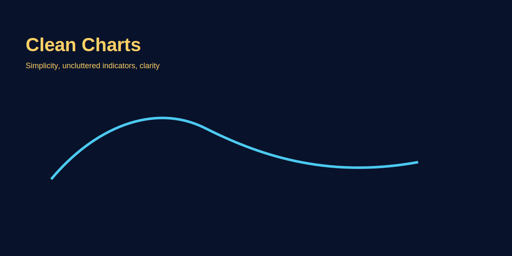

Clean Charts Philosophy
Problem-based introduction
Too many indicators and cluttered visuals confuse decision-making. Clean charts help you see price structure and take better trades. This article explains a minimalist approach with GOLD examples.
Why Clean Charts Matter
Problem: Beginner traders load 10+ indicators (RSI, MACD, Stochastic, Bollinger, Ichimoku, 5 MAs, volume, ATR) → chart becomes rainbow soup. Conflicting signals → paralysis. "RSI says buy, MACD says sell, Stochastic neutral" → no trade OR wrong trade.
Psychology: More indicators ≠ better decisions. Brain overloads with visual noise. Price action (support, resistance, candlestick patterns) gets buried under indicator clutter.
Clean chart advantage: Focus on what matters — price structure, trend, key levels. Faster decisions, less confusion, better execution.
Study: Professional traders use 1–3 tools max. Retail losers average 7+ indicators. Complexity illusion: complicated setup feels "professional" but destroys clarity.
Clean Chart Template (Gold Standard)
Minimalist setup for GOLD (XAU/USD) intraday scalping:
- Candlesticks: Neutral colors — white/green for bullish, black/red for bearish. No fancy Heikin-Ashi (hides information).
- 50 EMA: Single moving average for trend bias. Price above = long bias; below = short bias. That's it.
- Key levels: Draw 3–5 horizontal lines max — yesterday's high/low, current day's range extremes, weekly pivot. Use muted colors (grey/yellow).
- Separate panel: RSI(14) in lower panel (optional). For confirmation only; not entry trigger.
- Grid: OFF. Background color: solid dark (reduces eye strain).
- No: Volume bars (unless specifically volume-trading strategy), Fibonacci (draw only when needed for specific trade), trendlines (draw temporarily, delete after trade).
Result: Price dominates visual field. Levels stand out. Trend clear. Decision-making fast.
Indicator Audit Process
Goal: Keep only tools that provide unique, actionable information. Remove redundant/decorative indicators.
- List current indicators: Screenshot your chart. Write down all overlays, oscillators, custom scripts.
- Question each:
- "Does this give me information price alone doesn't?" (RSI overbought/oversold = YES; 5th moving average = NO, redundant).
- "Have I used this to make profitable decisions in last 20 trades?" (If no, delete).
- "Can I explain this indicator's logic in 1 sentence?" (If no, you don't understand it — remove until studied).
- Remove 1 per week: Don't strip everything overnight. Remove least-used indicator; trade 10 setups. If no performance drop, it was noise. Repeat.
- Final audit: After 1 month, you should have 1–3 tools. Test: Can you take your best trade with only price + 1 indicator? If yes, you've achieved clean chart clarity.
Common Indicator Traps
| Indicator | Why Traders Add It | Reality Check |
|---|---|---|
| 5 Moving Averages | "Catch every crossover" | All lag price. 1 MA enough for trend. Others = visual clutter. |
| RSI + Stochastic + CCI | "Triple confirmation" | All measure momentum similarly. Pick 1 (RSI standard). Redundant. |
| Ichimoku Cloud | "Looks pro" | Complex; hides price action. Unless deep study, removes more than adds. |
| Fractals, Alligator, ZigZag | "Magic formula" | Repaints, lags, or decorative. Rarely actionable for retail traders. |
| Volume (for forex) | "See institutional activity" | Forex = decentralized; broker volume ≠ market volume. Tick volume misleading. Better for stocks/futures. |
Price Action Focus: What to Watch Instead
Indicators derive from price; price is source. Master reading raw price structure:
- Support/Resistance: Levels where price repeatedly reversed. More reliable than any oscillator.
- Candlestick patterns: Pin bars (rejection), engulfing (momentum shift), doji (indecision) — real-time market psychology.
- Higher highs/higher lows: Uptrend definition. Lower highs/lower lows = downtrend. Simplest trend tool.
- Range vs trend: Price oscillating between 2 levels = range (fade extremes). Price making new highs/lows = trend (follow momentum). One glance sufficient; no indicator needed.
- Round numbers: GOLD 2000.00, 2050.00, 2100.00 act as magnets/barriers. Institutions place orders here. Price action > RSI divergence.
Chart Setup Workflow (New Trader)
- Week 1: Strip everything. Trade with only candlesticks + horizontal support/resistance lines. Forces you to read price.
- Week 2: Add 1 moving average (50 EMA or 200 SMA) for trend context. Nothing else.
- Week 3: Add 1 momentum indicator (RSI or MACD) in separate panel. Use for confirmation only (e.g., bullish price setup + RSI < 30 = stronger long).
- Week 4: Evaluate: Does indicator improve decisions or distract? If distract, remove. If helpful, keep.
- Month 2+: Maintain 1–3 tool max rule. Any new indicator = remove old one first (1-in, 1-out rule).
Advanced: Multi-Timeframe Clean Approach
Problem: Checking 5 timeframes with 10 indicators each = analysis paralysis. 50 data points to process.
Clean solution:
- HTF (Daily): Trend direction only. Price above/below 200 SMA? Trend up/down. Done. Close chart.
- MTF (4H): Key levels + structure. Mark swing highs/lows, current range. Close chart.
- LTF (15M entry): Price + entry trigger (pin bar at support, break of consolidation). Execute.
Total screen time: 2 min for HTF/MTF analysis; 5 min monitoring LTF entry. Clean process = fast decisions.
Color Psychology & Visual Clarity
- Background: Dark grey or black. Reduces eye strain during long sessions. White charts = monitor glare, headaches.
- Candlesticks: Neutral scheme — green/white (bull), red/black (bear). Avoid neon colors (distracting).
- Levels: Muted yellow or grey. Stand out without screaming. Red SL, green TP (clear risk/reward visualization).
- Indicators: If used, single color (blue MA, purple RSI). No rainbow MAs (5 colors = visual chaos).
- Grid: OFF or minimal (light grey dotted). Heavy grid = noise competing with price.
Mental Clarity Benefits
Decision fatigue reduction: Clean chart = 3 decision inputs (price, trend, level). Cluttered chart = 15 inputs (10 indicators, price, multiple levels, trendlines). Brain bandwidth limited; conserve for execution quality, not analysis paralysis.
Faster execution: Clear setup = instant recognition. "Price at support + 50 EMA + RSI < 30 = long." 5-sec decision. Complex chart = "Wait, what's the Ichimoku cloud saying? MACD histogram flattening... Stochastic crossing..." → miss entry.
Emotional control: Cluttered charts create false complexity → overconfidence ("I have 10 indicators confirming!") or doubt ("Too many conflicting signals"). Clean charts = objective: "Setup present or not?" Binary decision reduces emotional trading.
Real Example: GOLD Scalp (Clean vs Cluttered)
Cluttered setup: Chart has 50 EMA, 100 EMA, 200 SMA, RSI, MACD, Stochastic, Bollinger Bands, ATR, volume, ADX, Parabolic SAR, 3 trendlines, 10 horizontal levels.
Setup appears: GOLD 2020.00, sitting on yesterday's low (support). Uptrend on daily. But... RSI 52 (neutral), MACD histogram negative, Stochastic in middle, Bollinger mid-band. Analysis: "Mixed signals; skip trade."
Clean setup: Chart has 50 EMA, yesterday's low marked (2020.00). Price at 2020.00 (support), above 50 EMA (trend up), pin bar formed (rejection of lower prices). Analysis: "Bullish confluence; long with SL 2015.00, TP 2030.00."
Outcome: Price bounces 2020 → 2030. Clean trader captures +10 pips (2:1 R:R). Cluttered trader skipped due to "mixed signals" (actually noise from redundant indicators).
Maintenance Discipline
- Weekly audit: Every Sunday, review charts. Delete unused drawings (old trendlines, outdated support/resistance). Fresh chart for new week.
- No "just checking" indicators: If you add indicator "to see what it says," you've violated clean chart rule. Only add after testing 50 trades on demo proves value.
- Separate research chart: Have 1 workspace for exploring new tools/backtesting. Keep trading workspace sacred — clean always.
- Screenshot best trades: Save clean chart screenshots of your best setups. Review monthly: "What did I see? Price structure + 1-2 tools = winner." Reinforces minimalism.
Image-based examples (mandatory)
Example shows a cluttered chart vs a cleaned chart with the same trading idea—clean wins for clarity.
Common Mistakes
- Adding every indicator you read about without testing.
- Using bright colors and distracting styles that hide price action.
- Keeping unused drawings/trendlines from weeks ago — creates visual clutter.
- Loading 5+ moving averages (all lag price; 1 sufficient for trend).
- Using Ichimoku/complex overlays without deep study — hides price structure.
- Avoiding clean charts because "simple = unprofessional" — complexity illusion trap.
Pro Tips
- Periodically reset charts to default and ask: does this help my decision or distract?
- Use a separate layout for strategy testing and a simplified one for execution.
- 1-in-1-out rule: Want to add new indicator? Remove old one first. Maintains clean discipline.
- Screenshot audit: Save your best trade setups; review what tools were actually used. Usually: price + 1-2 tools. Proof minimalism works.
- Speed test: Time your decision process. Clean chart = 5–10 sec. Cluttered = 30+ sec or paralysis. Faster = better execution.
- Separate research workspace: Have 1 MT4/TradingView workspace for clean trading, another for indicator testing. Never mix.
Risk Warning
Minimal charts improve decision clarity but do not remove market risks—size and stops remain essential.
SEO FAQs
- 1. Clean chart kaise set karein?
- Candlesticks + 1 moving average (50 EMA/200 SMA) + 3-5 key support/resistance levels + optional 1 oscillator (RSI) in separate panel. Grid OFF, dark background, muted colors. That's it.
- 2. Kya indicators completely hata dene chahiye?
- Not necessarily — keep 1-3 tools that provide unique, actionable info. Remove redundant indicators (5 MAs = clutter; 1 MA enough). Test: Can you take best trade with price + 1 tool? If yes, you're clean.
- 3. Kitne indicators beginners ke liye OK?
- Maximum 3: 1 trend indicator (MA), 1 momentum (RSI/MACD), 1 volatility (optional: Bollinger/ATR). More = analysis paralysis. Pros use 1-2 tools only.
- 4. Price action vs indicators — better kaunsa?
- Price action primary; indicators secondary (confirmation). Support/resistance + candlestick patterns > any oscillator. Indicators lag price; price is source of truth.
- 5. Ichimoku cloud use karna chahiye?
- Only if deeply studied (6+ months practice). Complex overlay hides price action for most traders. Beginners: avoid. Single MA simpler, equally effective for trend.
- 6. Chart clutter kaise kam karein gradually?
- Remove 1 indicator/week; trade 10 setups without it. If performance unchanged, it was noise — keep removed. Repeat until 1-3 tools left. Process takes 1-2 months but builds clean habit.
- 7. Clean charts ka psychological benefit?
- Reduces decision fatigue, speeds execution (5 sec vs 30+ sec), improves emotional control (objective setups vs conflicting signals). Mental bandwidth saved for risk management, not analysis.
- 8. Multi-timeframe analysis mein clean approach?
- HTF (daily): trend only (price vs 200 SMA). MTF (4H): key levels. LTF (15M): entry trigger. Total 3 checks, 2 min. No need to load 10 indicators on 5 timeframes.